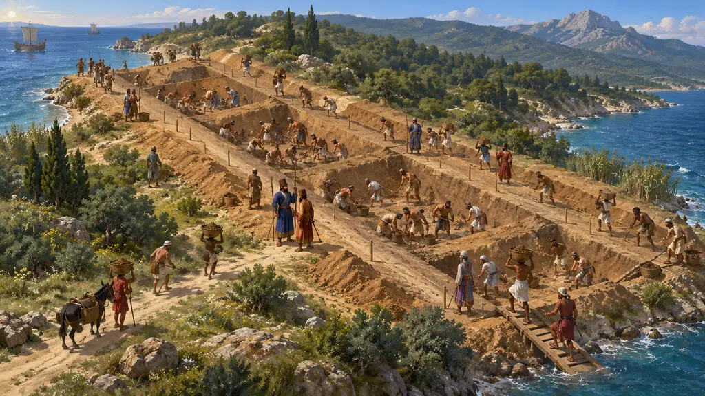
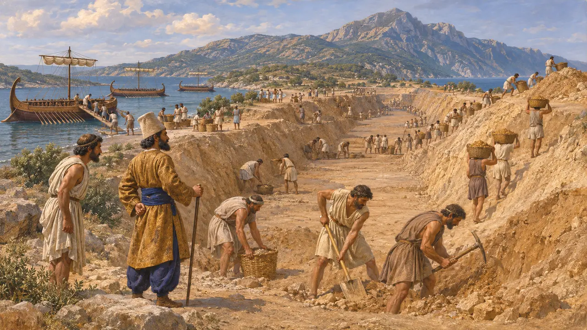
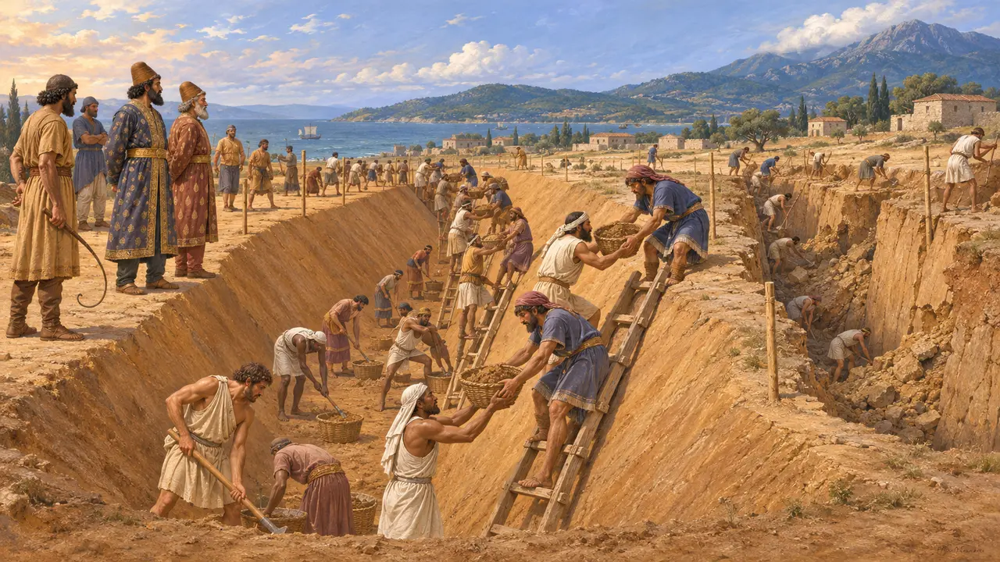
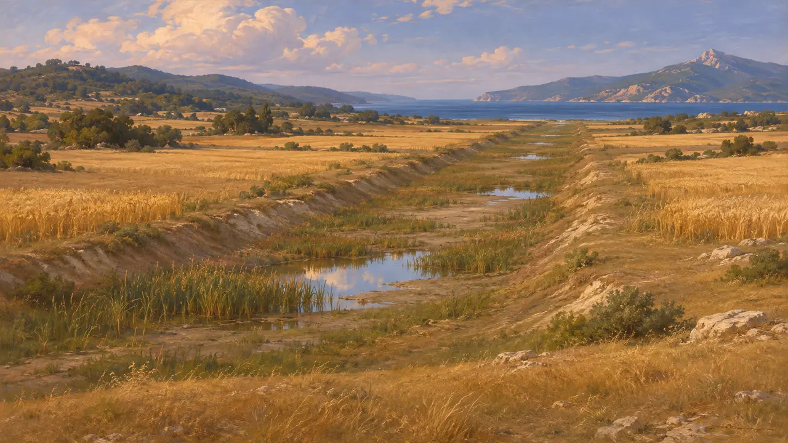
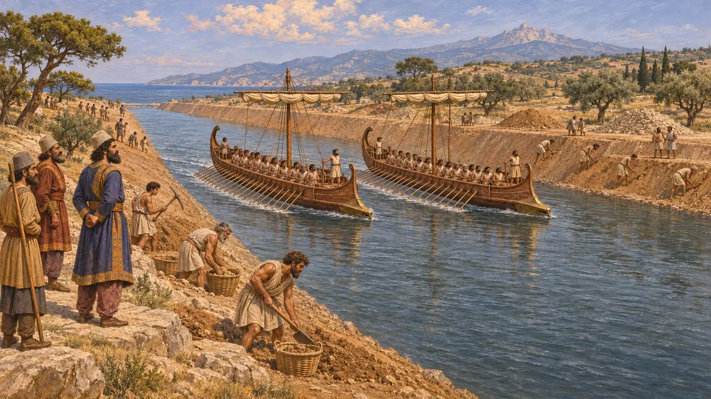
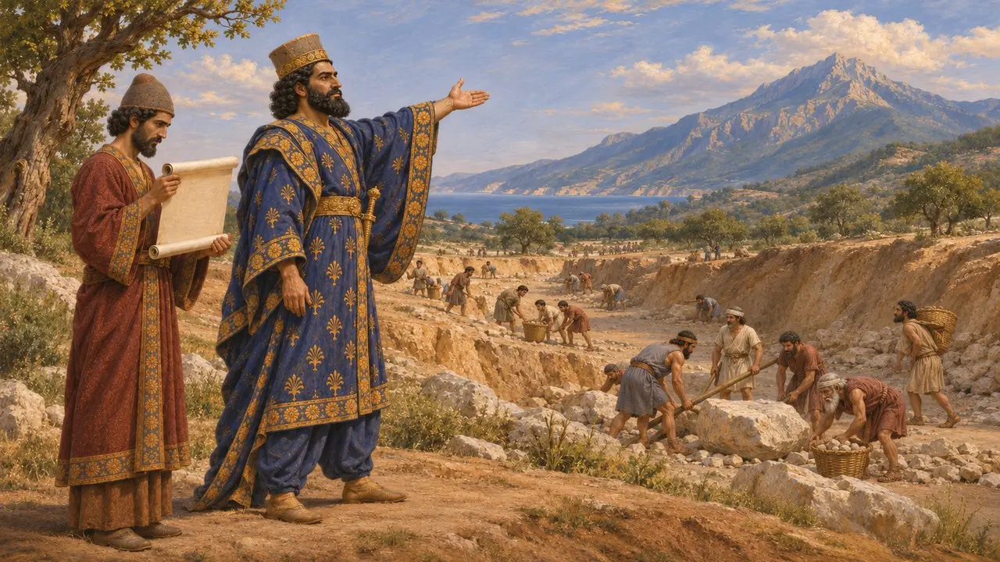

کندن آبراههٔ آتوس
آبراهٔ کشتیرو خشایارشا بر برزخ پشت کوه آتوس، حدود 483 تا 480 پ.م.
در بازی: مرحلهٔ ۹: آبراهه
در حدود 483 پ.م. خشایارشا کندن آبراههٔ کشتیرو را در تنگهٔ باریک پشت کوه آتوس در شمال دریای اژه آغاز کرد، تا ناوگانش مجبور نباشد از دماغهای بگذرد که کشتیهای مردونیه در 492 پ.م. در آن درهم شکسته بودند. هرودوت کندن آن را به تفصیل شرح میدهد و آن را خودنمایی میشمارد. از آن پس رد این مجرای مدفون پیدا شده است و همراه با پلهای هلسپونت بخشی از تدارک درازمدت خشایارشا برای لشکرکشی به یونان بود.
در بازی: مرحلهٔ آتوس پیرامون آبراهه ساخته شده است؛ آبراههٔ حفرشده به دست بوبارس و آرتخایس، که به روایت هرودوت بخش فنیقیان بهترینِ آن بود. یادداشتهای بازی نظر او را نیز میآورد که این کار از سر خودنمایی بود.

چرا آتوس را شکافتند
روایت باستانیهرودوت میگوید ناوگان مردونیه در سال 492 پ.م. هنگام دور زدن دماغهٔ آتوس درهم شکست. بنا بر ارقام او نزدیک به 300 کشتی و بیش از 20,000 تن از میان رفتند، رقمهایی که شاید اغراقآمیز باشند. خشایارشا که در 486 پ.م. جانشین داریوش شد، ترجیح داد بار دیگر دماغه را به خطر نیندازد. هرودوت میگوید کار در آتوس حدود سه سال ادامه یافت و تریرمهایی که در الائوس در شبهجزیرهٔ خرسونسوس مستقر بودند، نیروها را نوبتی به آن سو میبردند.
Herodotus 6.44; Herodotus 7.22

حفاری بر پایهٔ اقوام
روایت باستانیهرودوت میگوید زمین را در امتداد خطی از شهر سانه نشانهگذاری کردند و میان اقوام سپاه بخش نمودند. آنان زیر تازیانه میکندند و مردم پیرامون آتوس نیز به ایشان پیوستند، و دو پارسی، بوبارس پسر مگابازوس و آرتخایس پسر آرتایوس، سرپرست کار بودند. هرچه خندق ژرفتر میشد، خاک را با نردبان بالا میدادند. دیوارهها پیوسته فرو میریخت، جز در بخش فنیقیان که آن را دو برابر پهنتر در بالا نسبت به پایین کندند.
Herodotus 7.22-23

آبراههای زیر کشتزارها
در اسنادهیچ سنگنبشته یا لوح پارسیای از این آبراهه یاد نمیکند، اما زمین آن را حفظ کرده است. از 1991 گروهی بریتانیایی و یونانی با پیمایش زمینفیزیکی و گمانهزنی، مجرایی مدفون به درازای حدود 2 کیلومتر را در عرض برزخ ردیابی کردند، میان ساحل نزدیک نئا رودا و خلیج تریپیتی. مسیر آن با روایت هرودوت سازگار است. به نظر میرسد پیش از آنکه گلولای آن را پر کند، فقط اندکی باز نگه داشته شده بود.
B.S.J. Isserlin et al., The canal of Xerxes: summary of investigations 1991-2001, Annual of the British School at Athens 98, 2003

غرور یا عقل سلیم
مورد مناقشههرودوت گمان میکرد این آبراهه از سر غرور کنده شده است، زیرا کشتیها را میشد از روی برزخ کشید و گذراند. او میافزاید که آنقدر پهن بود که دو تریرم میتوانستند پهلو به پهلو پارو بزنند. بسیاری از مورخان اکنون دلایل استواری نیز میبینند: کشاندن صدها کشتی جنگی کند بود و آن دماغه خطری شناختهشده بود. یووِنال، شاعر رومی، در وجود آن تردید داشت، اما توسیدید آن را آبراههٔ شاه نامیده است و بررسیهای میدانی آن را تأیید میکند.
Herodotus 7.24; Thucydides 4.109; Juvenal, Satires 10; P. Briant, From Cyrus to Alexander, 2002

نامهای به کوه
افسانهٔ متأخرنویسندگان یونانیِ متأخرتر آبراهه را درس عبرتی از خودکامگی شاهان ساختند. پلوتارک روایت میکند که خشایارشا نامهای به آتوس نوشت و به کوه هشدار داد که سنگهای بزرگ بر سر راه کارگرانش نگذارد، وگرنه آن را فرو میکَند و به دریا میافکند. این حکایت همانند داستانهای یونانی دربارهٔ تنبیه هلسپونت به دست خشایارشاست و هیچ منبع کهنی آن را تأیید نمیکند.
Plutarch, On the Control of Anger
منابع
- Herodotus 7.22-24
- Herodotus 6.44
- Thucydides 4.109
- B.S.J. Isserlin et al., The canal of Xerxes: summary of investigations 1991-2001, Annual of the British School at Athens 98, 2003
- P. Briant, From Cyrus to Alexander, 2002
- Plutarch, On the Control of Anger